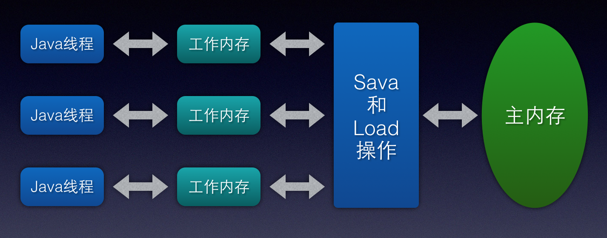
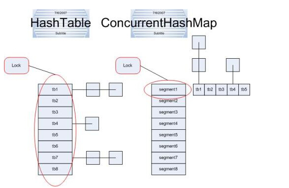

Guava是Google开源出来的Java常用工具集库，包括集合，缓存，并发，字符串，I/O操作等在Java开发过程中经常需要去实现的工具类。
如Joiner、Splitter、Strings、CharMathcer等工具类，其中有许多令人眼前一亮的代码。如Strings.repeat方法里，为了尽可能提升效率采用了native方法System.arrayCopy。如Splitter中，匿名类的灵活使用。如Joiner.appendTo中优雅的解决最后一个分隔符问题。如Splitter.separatorStart中神奇的continue用法。
Guava还有一个很重要的功能——GuavaCache，平时开发过程中，一般后台会用数据库作为数据存储。稍大的系统中，为了减少db查询耗费的时间，会在前面加一层NoSql作为缓存。但是随着系统规模的增加，缓存的查询压力会越来越大。本地缓存（或者称为热点缓存）这时候可以有效的缓解缓存的压力，特别当某些数据查询十分频繁但修改较少的时候。
例如，一个官方账号的info数据，几乎每个用户都会用到，很少会有改动。如果按正常得缓存流程，那么每个用户取info时，都会触发一次缓存查询，这会产生很高的tps，如果在每个服务器拿到缓存数据后，存到本地内存中，并设定一个有效期，例如一分钟。那么在一分钟内都不会再去缓存中查询这个数据，相当于直接把tps降到了一分钟一次。当然，这回导致数据更新有一分钟得延迟，多以如果对数据实时性要求非常高的，不适合使用。
使用示例
首先我们来看一下使用的示例代码
|
|
上述代码，简单的介绍了一种GuavaCache的常用方式。在GuavaCache对外提供的方法中， recordStats和removalListener是两个很有趣的接口，可以很好的帮我们完成统计功能和Entry移除引起的监听触发功能。
Builder模式
设计模式中的Builder模式 在Guava中很多地方得到的使用。Builder模式是将一个复杂对象的构造与其对应配置属性表示的分离，也就是可以使用基本相同的构造过程去创建不同的具体对象。例如在web接口中的返回对象就常用这种模式。
|
|
Tips：在Effective Java第二版中，Josh Bloch在第二章中就提到使用Builder模式处理需要很多参数的构造函数。他不仅展示了Builder的使用，也描述了相这种方法相对使用带很多参数的构造函数带来的好处。
对象引用
在说GuavaCache之前，首先需要了解一下java中的引用。java在1.2版本之前对象只有两种引用方式：被引用和没有被引用。但是这种方式对GC来说效果并不好，因此在1.2之后的版本中，java对引用的概念进行了扩展，一共有四种引用方式：
- 强引用（Strong Reference）：强引用在程序代码中随处可见，十分普遍。比如：
Object object = new Object()，这类引用只要还存在，垃圾收集器就永远不会回收掉这类引用的对象。 - 软引用（Soft Reference）：软引用用来描述一些虽然有用但是并不是必须的对象。对于软引用关联的对象，在系统将可能发生内存溢出异常之前，垃圾收集器将会把这些引用的对象进行第二次回收。只有这次垃圾回收还没有足够的内存的时候，才会抛出内存溢出异常。
- 弱引用（Weak Reference）：弱引用是一种比软引用强度还要弱的引用，因此这些引用的对象也是非必须的。但是，对于弱引用的对象只能生存到下一次垃圾回收发生之前。当垃圾收集工作开始后，无论当前的内存是否够用，都会把这些弱引用的对象回收掉。
- 虚引用（Phantom Reference）：虚引用是最弱的一种引用。一个对象是否被虚引用关联，完全不会对其生存时间构成影响，也无法通过虚引用获得一个对象实例。为一个对象设置虚引用关联的唯一目的就是能在这个对象被收集器回收时收到一个系统通知。
对象可见性
什么是可见性？
可见性就是，当程序中一个线程修改了某个全局共享变量的值之后，其他使用该值的线程都可以获知，在随后他们读该共享变量的时候，查询的都是最新的改改修改的值。
与CPU的多级缓存结构类似，Java虚拟机中内存分为两类：
- 主内存（Main Memory）：所有线程共享的内存区域，虚拟机内存的一部分。
- 工作内存（Work Memory）：线程自己操作的内存区域，线程直接无法访问对方的工作内存区域。
之所以分为两部分内存区域，原因和CPU很类似。为了线程可以快速访问操作变量，当线程全部直接操作共享内存，则会导致大量线程之间竞争等问题出现，影响效率。
关于Java中工作内存和主内存之间的交互关系如下图：

为了保证共享变量可见性，除了volatile之外，还有synchronized和final关键字。
synchronized：执行synchronized代码块时，在对变量执行unlock操作之前，一定会把此变量写入到主内存中。final：该关键字修饰的变量在构造函数中初始化完成之后（不考虑指针逃逸，变量初始化一半的问题），其他线程就可以看到这个final变量的值，并且由于变量不能修改，所以能确保可见性。
锁细化
在Java语言中，最经典的锁细化提高多线程并发性能的案例，就是ConcurrentHashMap，其采用多个segment，每个segment对应一个锁，来分散全局锁带来的性能损失。从而，当我们put某一个entry的时候，在实现的时候，一般只需要拥有某一个segment锁就可以完成。
关于普通的HashTable结构和ConcurrentHashMap结构，从下图可以很显而易见的看出两者的区别。所以，就锁这个层面上，concurrentHashMap就会比HashTable性能好。

Guava ListenableFuture接口
未完